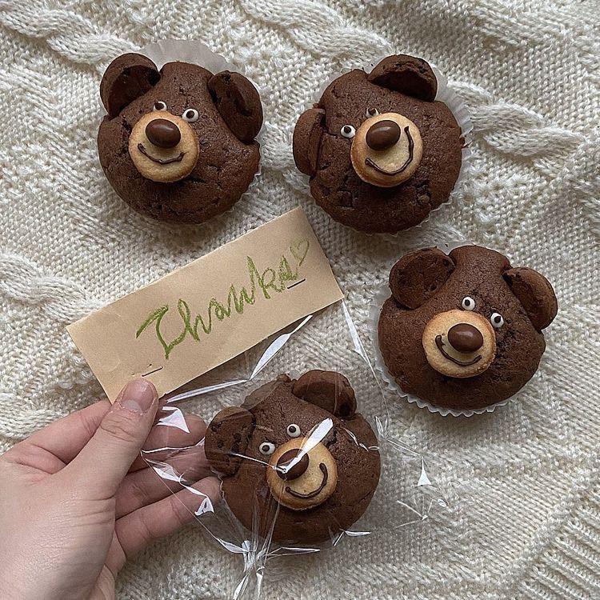
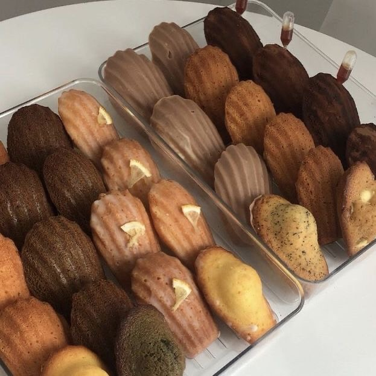

Home
Learn More Bakery
Learn More Drink

Learn More Bakery
The name “Le Délice” comes from French, which literally means “delightful taste.”
We chose this name because we believe pastries are more than just desserts to satisfy hunger — they are little moments of happiness, crafted to be shared and remembered.
Every pastry is created with utmost care and attention to detail. From handpicking the finest, freshest ingredients to the delicate art of baking, we dedicate ourselves to ensuring that every piece carries flavors that are fragrant, delicious, and truly unique. Each pastry is a reflection of our passion — blending tradition, creativity, and craftsmanship in every layer.
Every bite is not only about tasting sweetness, but also about experiencing warmth, joy, and cherished memories ‚Äî like receiving a thoughtful little gift that brightens your day and lingers in your heart. üíù
Back to home
Learn More Drink
Learn More Bakery

Strawberry cake
This strawberry cake features a soft, fluffy sponge layered with light,
creamy frosting and fresh, juicy strawberries. Each bite offers a perfect balance of sweetness and slight tartness,
creating a refreshing, indulgent treat that delights both the eyes and the palate
|

Chocolate Cookkie
Chocolate chip cookies with a crisp, golden edge and a soft, chewy center. Each bite is filled with rich,
melting chocolate, perfectly balanced with the sweet, buttery dough, making every mouthful
both comforting and indulgent.
|
Tarte
This tart features a crisp, buttery crust filled with smooth, creamy filling and
topped with fresh, vibrant fruit. Each bite offers a perfect balance of sweetness and freshness, making
it both visually appealing and delightfully satisfying to the palate.
|

Millefeuille
Mille-feuille features layers of crisp, delicate puff pastry filled with smooth,
creamy custard, topped with a light dusting of icing sugar. Each bite is a perfect balance
of crunch and creaminess, melting effortlessly in your mouth.
|

Bear Cupcake
This bear-shaped cupcake features a soft, moist cake base topped with smooth,
creamy frosting, carefully decorated to resemble an adorable bear face. Each bite combines sweetness and
creaminess with a touch of whimsy, making it both a delightful treat for the palate and a feast for the eyes.
|

Berries
Fresh berries are vibrant and full of flavor, offering the perfect balance of
sweet and tart in every bite. Bursting with natural juiciness, they bring a refreshing
and wholesome sensation,making each mouthful a delightful experience for both the palate and the eyes.
|

Canale
Canale features a dark, caramelized crust with a soft, chewy interior, infused with the delicate
flavors of vanilla and rum. Each bite offers a perfect balance of crispiness and tender richness,
making it both fragrant and indulgent.
|

Madeleine
Madeleines are soft, fluffy, and fragrant, with the gentle aroma of butter and a hint
of lemon in every bite. Perfect to enjoy with a warm cup of tea, they offer a comforting and delicate treat.
|

Croissant
Croissants are flaky, buttery, and soft on the inside, with a perfectly crisp exterior.
Delicious on their own or filled with chocolate, almond, or cheese,
they offer a rich and indulgent treat in every bite.
|